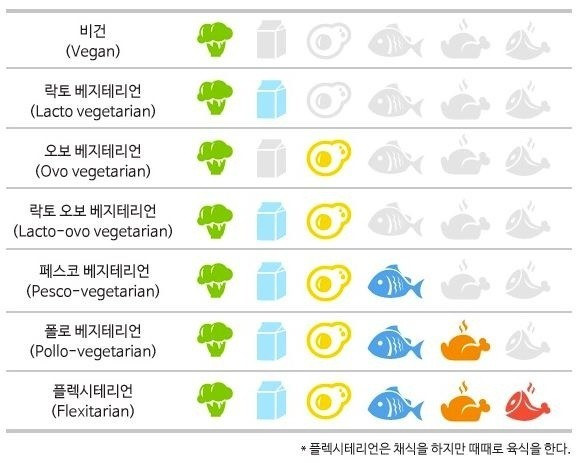

- 채식주의자(VEGETARIAN)이란 무엇인가?
육식을 피하고(일부 채식주의 단계에서는 닭고기나 가끔의 육식 허용)
식물을 재료로 만든 음식만을 먹는 사람을 이르는 말이다.
시사상식사전
세계채식연맹(IVU)에서는 채식주의자를 '육지동물은 물론 바다나 강에 사는 물고기도 먹지 않는 사람들. 단, 우유나 계란은 취향대로 섭취할 수 있고 안 할 수도 있다.'라고 정의한다.
채식주의자는 무엇을 먹고 먹지 않느냐에 따라 다음의 유형으로 구분된다.
* 채식주의자 종류
채식주의자 구분표
구체적인 자료는 각 링크 참고!